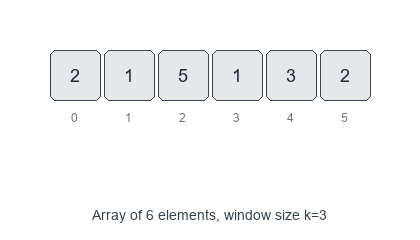
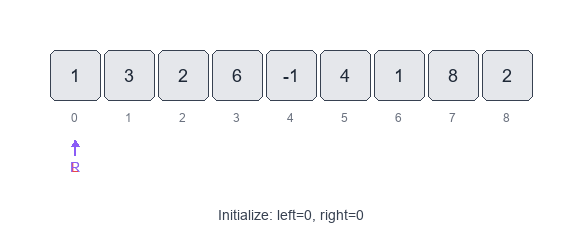

Introduction to Sliding Window Pattern
The Sliding Window pattern uses a range of elements (the "window") that slides through an array or string to efficiently solve problems involving contiguous subarrays or substrings.
Visual Examples
Fixed-Size Window

Dynamic Window (Expand/Contract)

When to use
- You need to find contiguous subarrays/substrings that satisfy certain conditions.
- The problem asks for maximum, minimum, or optimal values within a range.
- You're dealing with sequences where you can incrementally update results as you move the window.
Common variants
- Fixed-size window: window size is constant (e.g., max sum of K consecutive elements).
- Dynamic window: window grows/shrinks based on conditions (e.g., longest substring with K distinct characters).
- Two separate windows: maintain multiple windows for more complex scenarios.
Pattern recipe
- Initialize window boundaries (
left,right) and tracking variables (sum, count, frequency map). - Expand the window by moving
rightpointer and updating state. - Contract the window by moving
leftpointer when conditions are violated. - Record the result at each valid window state.
- Continue until
rightreaches the end of the array/string.
Complexity
- Time: O(n) — each element is visited at most twice (once by right, once by left).
- Space: O(1) to O(k) depending on tracking needs (frequency maps, sets).
Short examples
Maximum sum subarray of size K (fixed window) — Python
def max_sum_subarray(arr, k):
if len(arr) < k:
return None
window_sum = sum(arr[:k])
max_sum = window_sum
for i in range(k, len(arr)):
window_sum = window_sum - arr[i - k] + arr[i]
max_sum = max(max_sum, window_sum)
return max_sum
Longest substring with K distinct characters (dynamic window) — Python
def longest_substring_k_distinct(s, k):
char_freq = {}
left = 0
max_len = 0
for right in range(len(s)):
char_freq[s[right]] = char_freq.get(s[right], 0) + 1
while len(char_freq) > k:
char_freq[s[left]] -= 1
if char_freq[s[left]] == 0:
del char_freq[s[left]]
left += 1
max_len = max(max_len, right - left + 1)
return max_len
Smallest subarray with sum >= S (dynamic window) — Python
def smallest_subarray_with_sum(arr, s):
window_sum = 0
min_len = float('inf')
left = 0
for right in range(len(arr)):
window_sum += arr[right]
while window_sum >= s:
min_len = min(min_len, right - left + 1)
window_sum -= arr[left]
left += 1
return min_len if min_len != float('inf') else 0
Problems to practice